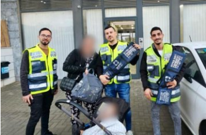
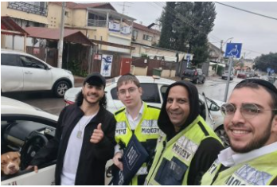
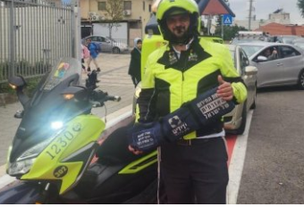

אודות
אודותינו
ארגון ידידים הנו ארגון ייחודי, המעניק ״עזרה ראשונה שאינה רפואית״ שאינה
מצריכה ידע מקצועי בדרכים ובבתים, 24 שעות ביממה, למעט שבת וחג. תחת הגדרה
זו מספק הארגון סיוע בשלל תחומים, ביניהם: סיוע בפנצ’ר, התנעת רכבים, מילוי
מים / שמן / דלק, בכבישים מהירים ואף בפתיחת רכבים נעולים באמצעות ציוד
מקצועי וללא כל נזק. בנוסף, מתנדבי ידידים מבצעים חילוצי שטח לרכבים
שהתחפרו, מסייעים בפתיחת דלתות בתים שנטרקו ועוברים הכשרות מקצועיות לחילוץ
אנשים ממעליות תקועות.
שיתופי פעולה
הארגון משתף פעולה עם כלל כוחות ההצלה והחירום, ומסייע במקרים של חילוץ
תינוקות שננעלו ברכבים, בחילוץ אנשים ממעליות במקרים בהם קיים חשש לחיי אדם
ומסייע למשטרת ישראל באיתור נעדרים. כמו כן קיימים שיתופי פעולה עם רשויות
מקומיות רבות ברחבי הארץ, למתן מענה מהיר ואיכותי בשגרה, ולשילוב מתנדבי
הארגון בפרויקטים ייחודיים, דוגמת “עיר ללא אלימות” או “סע”ר” למתן מענה
מיידי בשעת חירום.
איך הכל התחיל
הארגון הוקם בשנת 2006, ומנוהל ע”י המנכ”ל ישראל אלמסי, ולצידו הסמנכ”ל
לייזי שטרן. מאז הארגון הלך והתפתח עד שכיום כבר יודעים אלפי הפונים מידי
חודש מכל רחבי הארץ ללא הבדל דת גזע, או מין, כי בכל מקרה בו נתקעים הם
בדרכים, ידידים תמיד יהיו שם בשביל לחלץ ולסייע.
היכן אנחנו כיום
הדבר מתאפשר הודות ל-65,000 מתנדבים ומתנדבות המגיעים מכל קצוות האוכלוסיה
האזרחית בישראל, פזורים בכל רחבי הארץ, מדן ועד אילת, ומצוידים בניסיון,
בידע ובציוד מקצועי רב. התהליך מתחיל במוקד הארצי, המופעל אף הוא על ידי
למעלה משלש מאות וחמישים מוקדנים מתנדבים אשר באמצעות מרכזיה משוכללת
מקבלים את השיחה אל הטלפון האישי שלהם ומשם האירועים מנותבים אל הצוותים
הרלוונטיים ואל הכוננים הזמינים שבשטח, עד למתן המענה המהיר ביותר לאזרח
שנתקע.
החזון
החזון שלנו הוא להגיע למצב בו יהיה לפחות מתנדב אחד בכל בניין, כך נוכל
להגיע למצב בו לא יתקע אף אדם למעלה ממספר דקות בכל מקום ברחבי הארץ. כך
נהפוך את מדינת ישראל למקום טוב יותר.
חדשות הארגון

נתיבות: תינוק ננעל בשגגה ברכב, מתנדבי ידידים חילצו אותו בשלום • ״תחושה
עוצמתית
לחלץ ולהציל חיים יום אחר יום״
להמשך קריאה
היום (שני) בשעה 16:11 התקבלה קריאה במוקד ידידים
אודות
תינוק כבן שנה, שננעל בשגגה ברכב לעיני אמו, ברחוב יצחק שמיר בנתיבות.
דני יוריק, מוקדן ידידים, ענה לשיחה והזעיק מתנדבים למקום. מיכה פארי, ישראל מאיר דוד
ויעקב
פדידה, מתנדבי הסניף המקומי, נענו לקריאה והגיעו במהירות למקום. באמצעות הציוד הייעודי
שברשותם, חילצו המתנדבים את התינוק בשלום, ללא גרימת נזק לרכב.
מיכה מספר: ״הייתי בעבודתי בסמוך למיקום הקריאה שהתקבלה, כך הגעתי אל הרכב הנעול
במהירות.
התחלתי מיד בפעולות חילוץ ובתוך כארבעים שניות בלבד, חילצתי את התינוק בשלום. תחושה
עוצמתית
מאוד לחלץ ולהציל חיים יום אחר יום. האמא הודתה לי ולמתנדבים הנוספים שהגיעו. היא
הופתעה
ממהירות ההגעה והחילוץ, ואמרה שידידים ארגון מדהים.״

לוד: כלב ננעל בשגגה ברכב, מתנדבי ידידים
חילצו אותו בשלום • “הייתה תקלה מכנית בידית של הדלת”
להמשך קריאה
היום (ראשון) בשעה 12:50
התקבלה קריאה במוקד
ידידים
אודות
כלב, שננעל בשגגה ברכב לעיני בעליו, ברחוב שפרינצק בלוד.
תמר גבאי, מוקדנית ידידים שענתה לשיחה, הזעיקה מתנדבים למקום. מוישי צרפתי – אחראי
מתנדבים
סניף מודיעין עילית , יחד עם גבעון פינקר וצבי שטיינמן, מתנדבי סניף רמלוד, נענו לקריאה
והגיעו במהירות לכתובת. באמצעות הציוד הייעודי שברשותם, חילצו השלושה את הכלב בשלום,
ללא
גרימת נזק לרכב.
מוישי מספר: “ננעל כלב לעיני הבעלים בעקבות בעיה מכנית בידית דלת הרכב. סיימתי את
הלימודים
והייתי בדרך להתפלל, תוך כדי הגיעה הקריאה אז נסעתי למקום במהירות ובזהירות. כשהגעתי
למקום
הבחנתי בבעיה בידית הרכב, אבל המזל היה שהרכב היה מונע לכן פשוט הורדתי חלון וככה פתחתי
את
הרכב. זו שמחה עצומה בשבילי לתת מענה מהיר באירועים מהסוג הזה. הבעלים הודה לנו מאוד.”

ראש העין: פעוט ננעל בשגגה ברכב, מנהל
אגף
הדרכה ובטיחות בידידים חילץ אותו בשלום • “החילוץ היה מהיר מאוד”
להמשך קריאה
הבוקר (שלישי) בשעה 7:46
התקבלה קריאה במוקד ידידים
אודות
פעוט כבן שנתיים, שננעל בשגגה ברכב לעיני אמו, ברחוב דקר בראש העין.
יוסי מנקין, מוקדן ידידים שענה לשיחה במוקד, לקח פרטים והזעיק סיוע. איתמר עמר – מנהל
אגף
הדרכה ובטיחות וחבר יחידת האופנועים, נענה לקריאה והגיע במהירות למקום. באמצעות הציוד
הייעודי שברשותו, חילץ איתמר את הפעוט בשלום, ללא גרימת נזק לרכב.
איתמר מספר: “החילוץ היה מהיר מאוד. הייתי בדרך לעבודה, ועם קבלת הקריאה נסעתי במהירות
לכתובת. האמא סגרה את הדלת כשהמפתח בתוך הרכב, ואז הרכב ננעל כשהפעוט בפנים. פתחתי
בזריזות
את הדלת וחילצתי את הפעוט. האמא הודתה והתרגשה מאוד.”